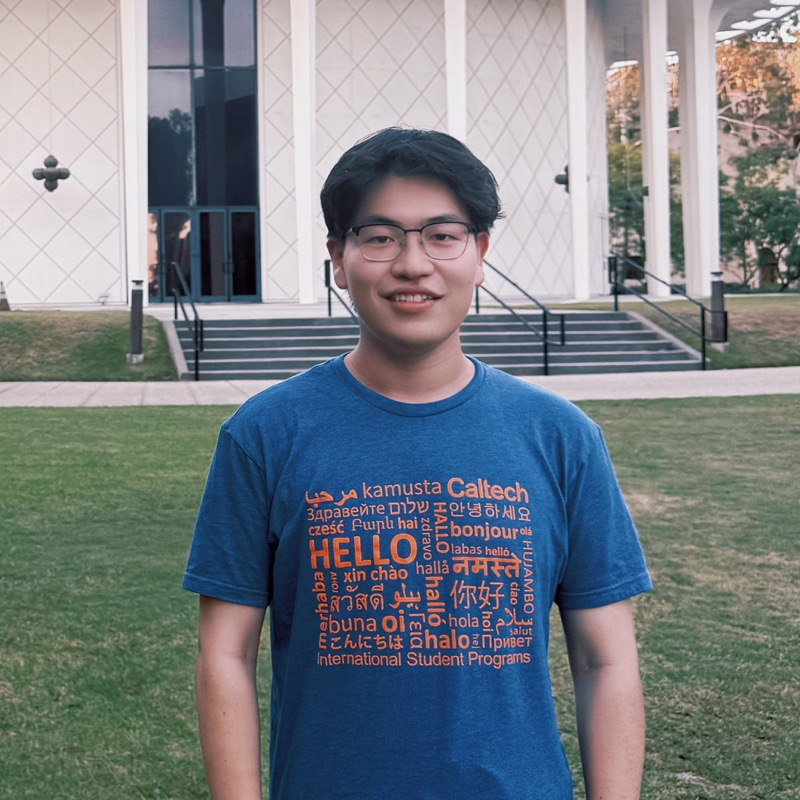

Zhengfei Song Hi there! I’m Zhengfei Song, a first-year master’s student in Electrical Engineering at the California Institute of Technology (Caltech), within the Division of Engineering and Applied Science. I am honored to be supported by the Chiang Chen Overseas Fellowship ($50,000). I received my Bachelor of Engineering in Automation from the College of Electronics and Information Engineering at Tongji University in July 2026. During my undergraduate studies, I conducted research in semantic segmentation with the Machine Intelligence & Autonomous Systems (MIAS) Group under the supervision of Prof. Rui Fan. My research interests lie in intelligent systems, with a focus on perception, multimodal learning, and real-world applications of machine learning. My goal is to develop systems that integrate diverse sources of information to perceive and understand the world, enabling reliable and adaptive behavior in complex environments. |  |
News
|
Selected Publication |
 | Vehicular road crack detection with deep learning: An online benchmark for comprehensive evaluation of existing algorithms N. Ma, Z. Song, Q. Hu, C. W. Liu, Y. Han, Y. Zhang, R. Fan, L. Xie Advanced Engineering Informatics 77, 105158, 2027 Paper / Website / Dataset |
 | Robust and Real-time Road Crack Detection through Collaborative Dual-Branch Learning on Robotic Sensing Platform Z. Song, N. Ma, Z. Zhang, M. J. Lee, S. Vityazev, A. Dvorkovich, R. Fan IEEE International Conference on Real-time Computing and Robotics, 2025 Paper / Code |
 | Self-Derived Multi-Modal Knowledge Distillation for Real-time Road Crack Detection N. Ma*, Q. Hu*, Z. Song*, S. Guo, R. Fan (*Equal Contribution) IEEE Sensors Journal, 2025 Paper / Code |
Website template from Jon Barron. |